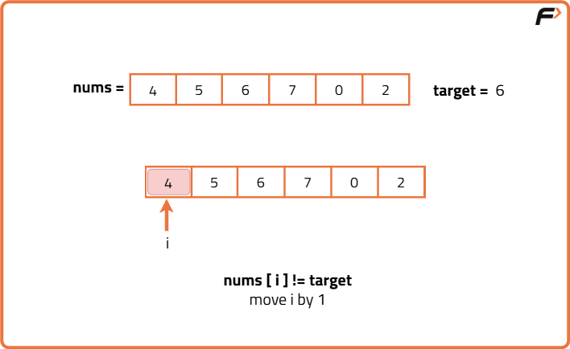
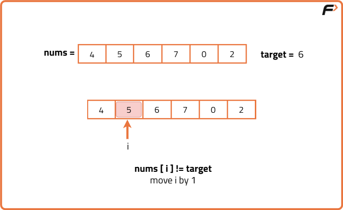
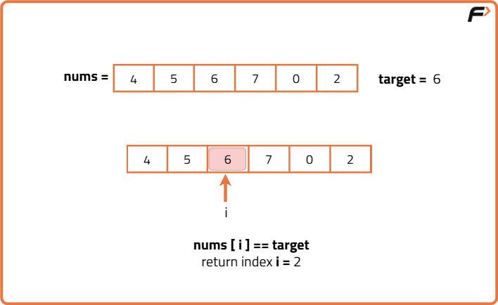
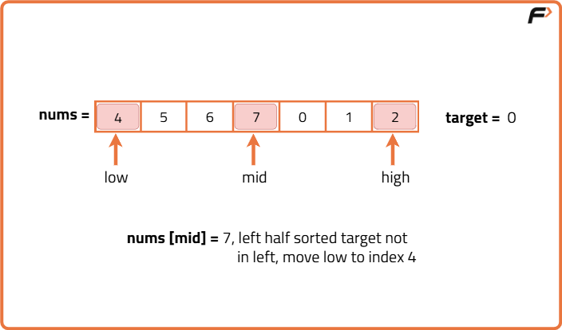
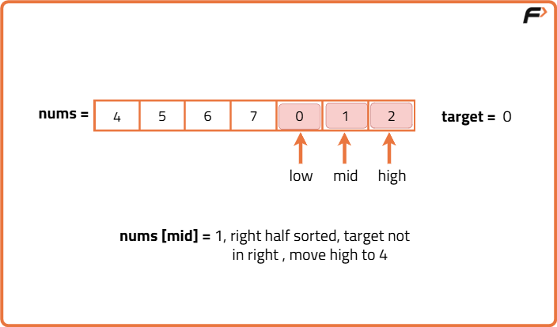
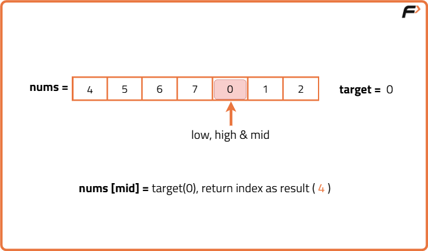

Search Element in a Rotated Sorted Array
Problem Statement: Given an integer array nums, sorted in ascending order (with distinct values) and a target value k. The array is rotated at some pivot point that is unknown. Find the index at which k is present and if k is not present return -1.
Examples
Input:nums = [4, 5, 6, 7, 0, 1, 2], k = 0 Output :4 Explanation : Here, the target is 0. We can see that 0 is present in the given rotated sorted array, nums. Thus, we get output as 4, which is the index at which 0 is present in the array.
Input: nums = [4, 5, 6, 7, 0, 1, 2], k = 3 Output :-1 Explanation :Here, the target is 3. Since 3 is not present in the given rotated sorted array. Thus, we get the output as -1.
Disclaimer: Here is the practice link to help you assess your knowledge better. It's highly recommend trying to solve it before looking at the solution.
Brute Force Approach
Algorithm
- Start a loop from the first element to the last element.
- For each element:
- Compare it with the target value.
- If it matches the target, return the current index immediately.
- If the loop finishes and no match is found, return -1.



Code
#include <bits/stdc++.h>
using namespace std;
class Solution {
public:
// Function to search target in rotated sorted array using brute force
int search(vector<int>& nums, int target) {
// Loop through each element in the array
for (int i = 0; i < nums.size(); i++) {
// If current element matches target, return index
if (nums[i] == target) {
return i;
}
}
// If not found, return -1
return -1;
}
};
// Driver code
int main() {
vector<int> nums = {4, 5, 6, 7, 0, 1, 2};
int target = 0;
Solution obj;
int index = obj.search(nums, target);
cout << index << endl;
return 0;
}
Complexity Analysis
Time Complexity: O(N),We may need to check every element in the worst case if the target is not present.
Space Complexity: O(1),No extra space is used; only constant variables.
Optimal Approach
Algorithm
Why Binary Search Still Works:
In normal binary search, we rely on the entire array being sorted to decide whether to go left or right. But in this case, we adapt it slightly we don't require the whole array to be sorted, just identify which part is sorted in the current range. Once we know which part is sorted, we check if the target lies inside that sorted section. If it does, we discard the other half. If not, we discard the sorted half and search the remaining half. No matter how the array was rotated, the sorted structure on at least one side of any middle point always helps us narrow down where to look next. This lets us avoid scanning the whole array like in brute force, and instead bring down the number of checks to logarithmic time.- Start by looking at the middle element of the array.
- Check if this middle element is the target if yes, return its index immediately.
- Now figure out which half of the array (left side or right side) is sorted.
- If the left part is sorted:
- Check if the target number falls within the range of that sorted part.
- If it does, discard the right half and continue the search in the left part.
- If it doesn’t, discard the left half and search in the right side.
- If the right part is sorted:
- Do the same check if the target is in that sorted part.
- If yes, discard the left side and search in the right.
- If not, discard the right and continue with the left.
- Repeat this process of eliminating half the array until the target is found or the search space is empty.



Code
#include <bits/stdc++.h>
using namespace std;
class Solution {
public:
// Function to search for target using binary search in rotated sorted array
int search(vector<int>& nums, int target) {
// Set the search space to entire array
int low = 0;
int high = nums.size() - 1;
// Continue until the search space becomes invalid
while (low <= high) {
// Find the middle index
int mid = (low + high) / 2;
// If the target is found at mid, return mid
if (nums[mid] == target)
return mid;
// Check if the left half is sorted
if (nums[low] <= nums[mid]) {
// If target lies in the sorted left half, search there
if (nums[low] <= target && target < nums[mid]) {
high = mid - 1;
}
// Else search in the right half
else {
low = mid + 1;
}
}
// Otherwise, right half is sorted
else {
// If target lies in the sorted right half, search there
if (nums[mid] < target && target <= nums[high]) {
low = mid + 1;
}
// Else search in the left half
else {
high = mid - 1;
}
}
}
// If not found, return -1
return -1;
}
};
// Driver code
int main() {
vector<int> nums = {4,5,6,7,0,1,2};
int target = 0;
Solution obj;
int result = obj.search(nums, target);
cout << result << endl;
return 0;
}
Complexity Analysis
Time Complexity: O(log N),We eliminate half of the search space in each iteration using binary search.
Space Complexity: O(1),We use only a few variables (low, high, mid) no extra space used.